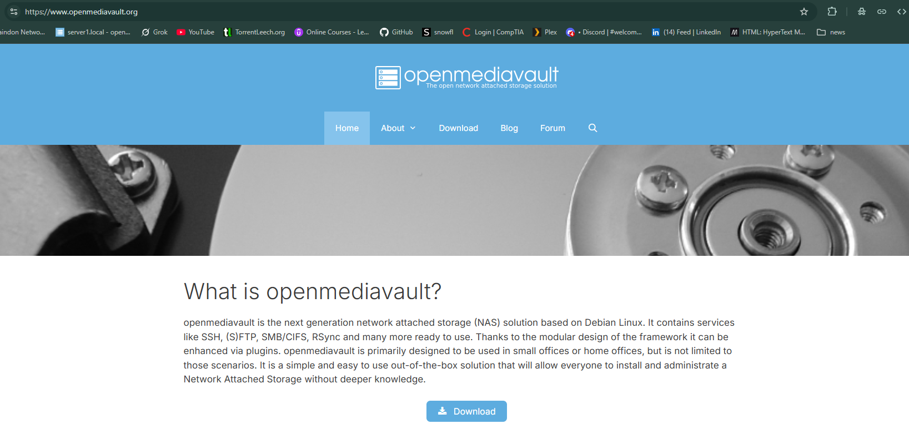
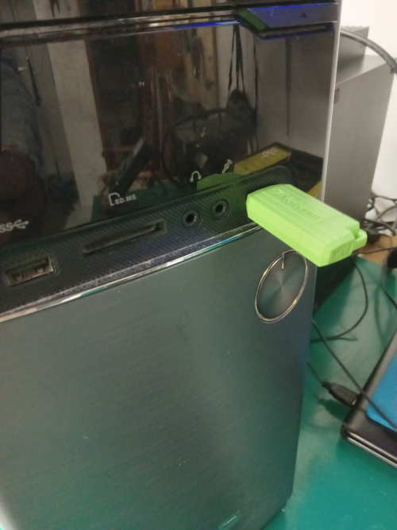
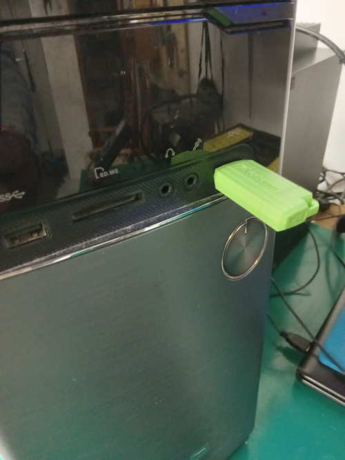
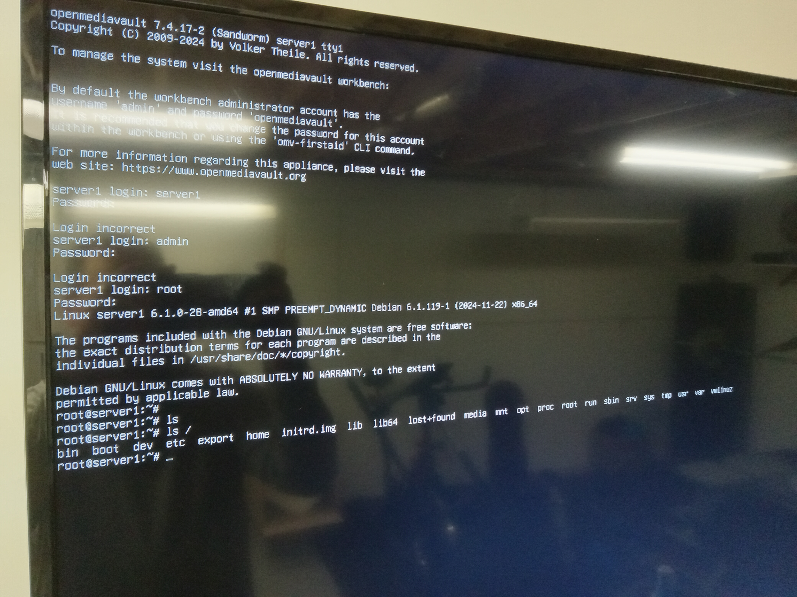
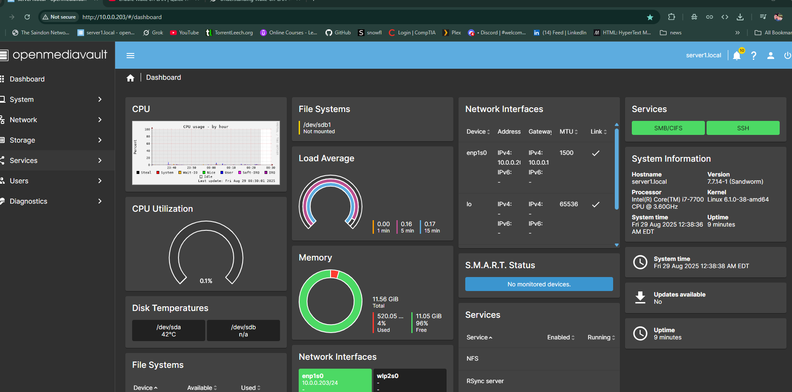
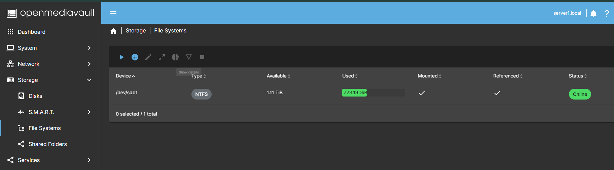
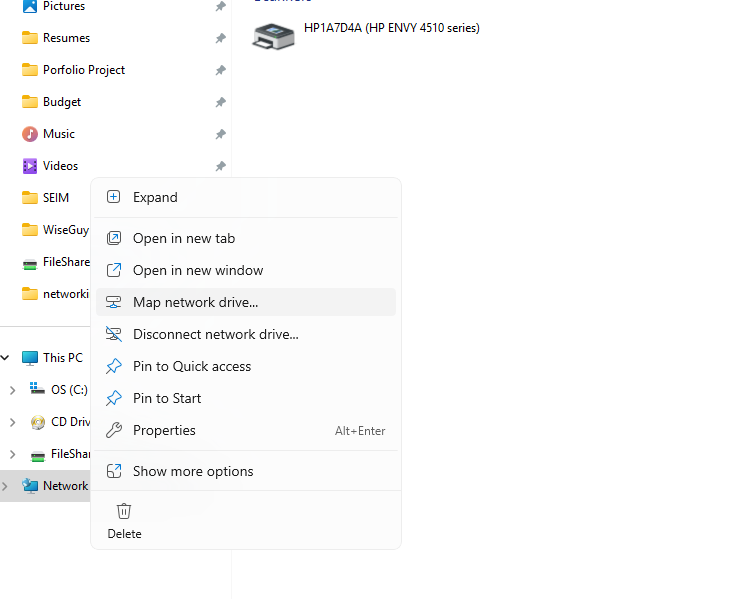
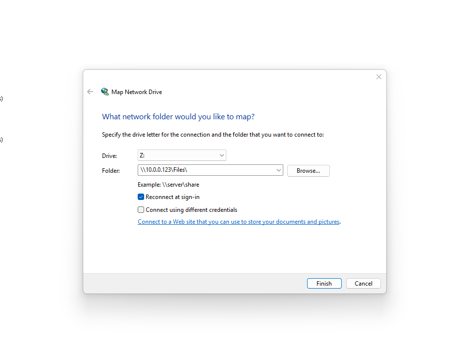

How to set up your home server
Share files in your own cloud using a home server using OpenMediaVault

Share files in your own cloud using a home server using OpenMediaVault
Outline:
Setting up a great home server is easier than you think but it still takes some time and energy to set it up properly. You can use an old computer or a Raspberry Pi to set up a home server. Network attached Server (NAS) has some very high upfront costs, so if you have some spare PC parts this is a great way to repurpose them and save some money. Plus! This gives you a great storage space so you don't have to pay for expensive stoage solutions and you control it, so you don't have to rely on 3rd parties to control your data.
-
A detailed walkthrough of how to set up a home server using an old computer.
-
How to install OpenMediaVault on your home server.
-
How to adapt your old hardware to work with your home server.
-
How to set up OpenMediaVault and configure it.
Here's what you'll see:
Click here to navigate to the website for OpenMediaVault
Go the site and download the .iso image file to get the latest version.
First steps to take when starting your home server
Find an old pc or laptop that you can use. Then find some Hard Drives laying around and make sure they are in good working condition. Find a good place to set up your server where you can easily connect an ethernet cable to your server.
 You can mix and match HDDs but keep in mind that you will need connection adapters to go from PATA to SATA or IDE to SATA.
And also, it's a good idea to change your CMOS battery if the computer is old enough.
You can mix and match HDDs but keep in mind that you will need connection adapters to go from PATA to SATA or IDE to SATA.
And also, it's a good idea to change your CMOS battery if the computer is old enough.
How to install OpenMediaVault on your home server.
Once you are all set up with the hardware you can start the installation process. You will need to create a bootable USB drive with the .iso image you downloaded from the OpenMediaVault website. You can use a program like Rufus to create a bootable USB drive. Select the .iso file and the USB drive you want to use and click start.
Once the USB drive is created you can plug it into your server and boot from it.
Remeber to change the boot order in the BIOS to boot from the USB drive first.
Follow the on-screen instructions to install OpenMediaVault on your server.

Select the .iso file and the USB drive you want to use and click start.
Once the USB drive is created you can plug it into your server and boot from it.
Remeber to change the boot order in the BIOS to boot from the USB drive first.
Follow the on-screen instructions to install OpenMediaVault on your server.

How to configure openMediaVault
Once the installation is complete you can remove the USB drive and reboot your server. You will need to find the IP address of your server to access the web interface. Take a screenshot of the IP address or write it down.  Open a web browser on your computer and type in the IP address of your server. The default username is "admin" and the default password is "openmediavault". Once you are logged in you can start configuring your server.This is what the dashboard looks like: 
From here you can start setting up your storage, users, and services. You can also install plugins (like Onedrive Synch or Wake on lan) to add more functionality to your server.
Step 1: Set up your storage
Go to Storage > File Systems and you should see your hard drives listed here. (take note that you must have a storage drive other than the one you installed OpenMediaVault on)
Select the hard drives you want to use and selecte mount new or mount existing.  Once the drives are wiped you can go to Storage > File Systems and create a new file system. Select the drives you want to use and click create. Once the file system is created you can mount it and it will be available for use.
Step 2: Set up your users
Go to Access Rights Management > User and create a new user. You can set the username, password, and group for the user.
Step 3: Set up your services
Go to Services > SMB/CIFS and enable the service. You can set the workgroup and description for the service. You can also set the shared folders and permissions for the service. Once you are done setting up your server you can start using it to share files and access your data from anywhere. Step 4: Mount your shared folder on your computer
On Windows you can map a network drive to your shared folder. On Linux you can use the command line to mount the shared folder. On Mac you can use the Finder to connect to the server. 
Use the format \\IP_ADDRESS\SHAREDFOLDER to connect to your shared folder. You will be prompted to enter the username and password you created earlier.  You might need to reboot your computer throughout this process. Once you are connected you can start using your home server to share files and access your data from anywhere.